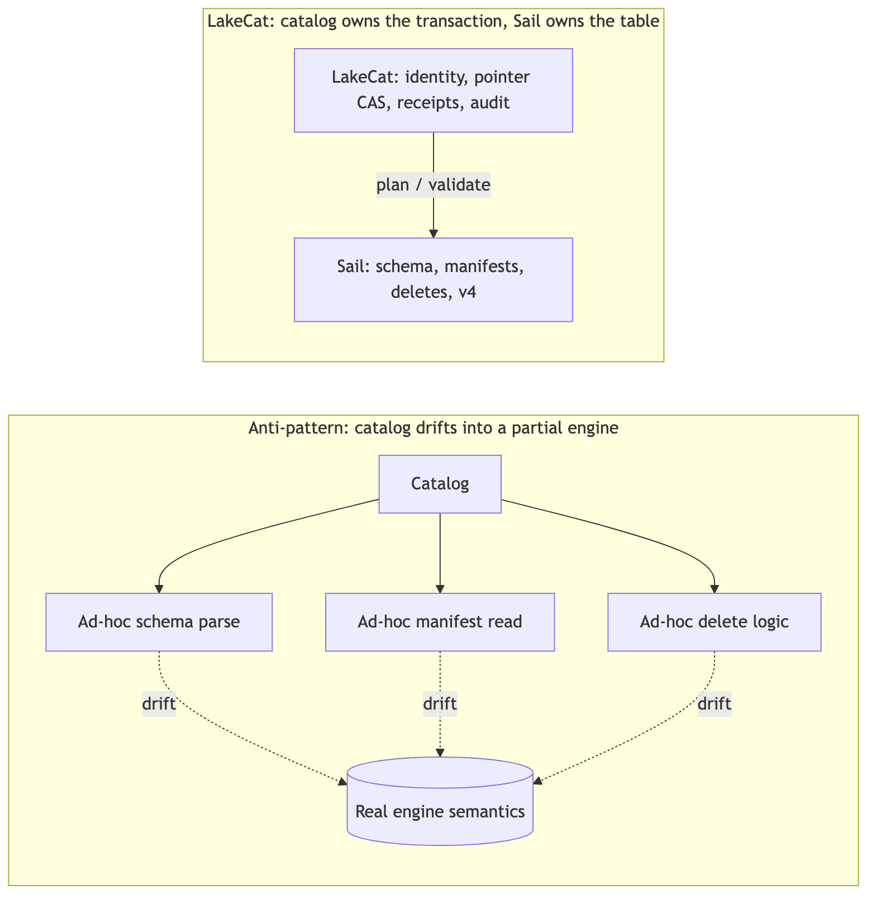

The most dangerous failure mode for a “smart” catalog is becoming a
partial engine. It starts innocently — validate a schema here, expand a
manifest list there, peek at a format-version field, check
a delete file. Each small parser looks cheaper than an engine call. Over
time the catalog grows a second Iceberg implementation with weaker
tests, fewer real execution users, and quiet drift from how the planner
actually behaves.

LakeCat takes the opposite path: the catalog owns the transaction; Sail owns the table semantics. Sail is the right home because it is Rust-native and already holds the structures this needs — generated Iceberg REST models, table providers, manifest pruning, metadata-as-data paths, commit plumbing, and format-version handling. Anything that needs field-id binding, schema/partition evolution, manifest metrics, delete association, row lineage, v4 metadata trees, or snapshot/branch selection moves toward Sail.
This matters because intermediation, left passive, loses information. A pass-through catalog sees only the table name, the pointer, the caller, and maybe a credential request; the engine sees schema, manifests, statistics, deletes, and filters; governance sees policy; lineage sees an after-the-fact event. Each system gets a shard of the truth, and the operational cost is concrete:
The next generation of callers — agents, notebooks, services, model
pipelines — needs stronger guarantees that live precisely between
catalog state and engine planning: a policy enforced before a scan is
planned; column restrictions that narrow the projection before file
tasks exist; policy-derived row predicates that become mandatory
filters; a stateless fetchScanTasks that cannot widen a
prior governed plan; short-lived, scoped, audited credentials;
idempotent commit retries; and graph/lineage side effects that reflect
committed state rather than best-effort handler work. A catalog too far
from the engine can only check a policy and hand back a pointer, hoping
the client preserves the restriction. LakeCat keeps the catalog boundary
thin and binds its proof to Sail’s plan so the restriction is real.